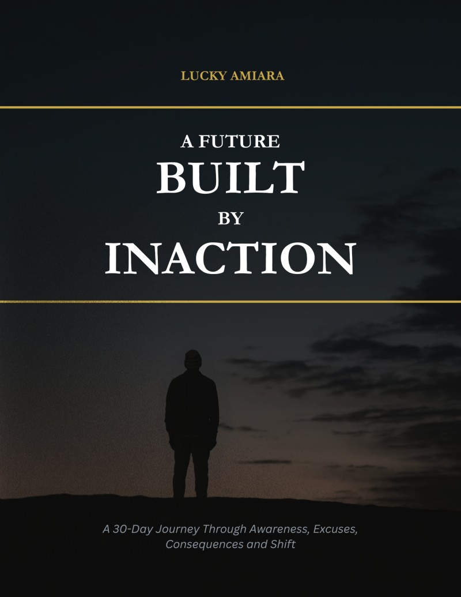
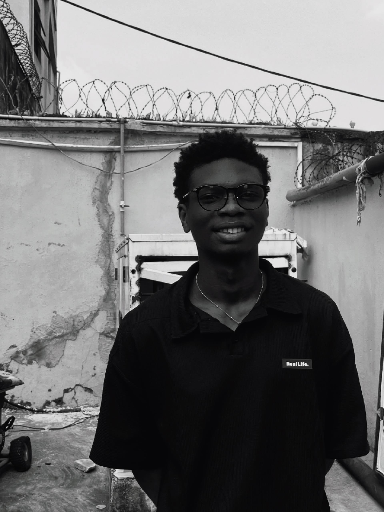

A personal development movement for young Africans aged 16–35
Awareness that moves you.
This is for you if you know exactly what you should be doing — and you're still not doing it. If you've mistaken thinking for progress, preparation for action, and waiting for wisdom. If you're 16 or 32 and still telling yourself the time isn't right. Awara isn't here to hype you up. It's here to hold up a mirror — and let you see clearly what staying still is actually costing you.
The Problem
There is a particular kind of suffering that doesn't look like suffering. It looks like calm. It looks like patience. It looks like someone who has everything figured out except the part where they begin. Across Africa, millions of young people are living this — not paralysed by poverty alone, but by the quieter trap of infinite preparation and infinite waiting. The cost doesn't show up immediately. It accumulates.
You are waiting for the right moment, the right resources, the right sign. But the moment you're waiting for is being built — or destroyed — by what you do right now.
You know what needs to change. You've read the books, watched the videos, felt the conviction. But knowing and doing have become two different lives — and only one of them is real.
You don't decide to abandon your dreams. You just keep not starting. One day at a time, one excuse at a time, until the version of you that was possible quietly walks out the door.
Family expectations, financial constraint, social comparison, spiritual searching — you carry it all. And sometimes the weight of all that context becomes the excuse to stay exactly where you are.
"The future you are afraid to build will be built for you — by time, by circumstance, by the choices of other people. That is not destiny. That is the cost of waiting."— Lucky Amiara, A Future Built by Inaction
What We Do
Awara isn't a brand. It's a bet — that the right words at the right moment can break a pattern that's been building for years. We work through three channels.
Essays, short-form videos, and Substack dispatches that don't motivate — they confront. Raw writing about the real cost of delay, the quiet seduction of comfort, and what it takes to choose differently. Published weekly across Substack, Instagram, TikTok, and YouTube.
Substack · Instagram · TikTok · YouTubeA gathering of young Africans who are done performing stillness as virtue. People who are building in public, holding each other accountable, and choosing discomfort over comfort consistently. Not a group chat — a movement with receipts.
Accountability · Peer Growth · Live SessionsBooks, guides, and structured courses built from honest reflection — not borrowed frameworks. Starting with A Future Built by Inaction, our education arm is being built to give you the tools that thinking alone never provides: structure, systems, practice.
Ebooks · Courses · WorkshopsThe Book
Four chapters. No fluff. This book was born from 30 days of public writing — an honest accounting of what it looks like to be aware of your potential and still refuse to move. It goes through Awareness, Excuses, Consequences, and Shift. In that order. Because that's how it actually works.
Written for young Africans who are tired of motivational content that forgets the morning after the feeling fades. This is the book for when you already know what to do. It's about why you still haven't.
Get the Book — ₦5,000 →
About

Lucky Amiara is a Nigerian software engineering student, Flutter developer, writer, and creator — but before any of that, he was someone who spent years knowing what he wanted to build and building very convincing reasons not to start.
Awara was born in December 2024 from a single moment of clarity: the recognition that awareness without movement isn't wisdom — it's a more sophisticated form of staying still. He started writing about it publicly, one dispatch a day, for 30 days. People recognised themselves in it. That recognition became a book. The book became a movement.
He built Awara to fight the future he almost made for himself. Not with inspiration — with honesty. Not with a highlight reel — with the actual cost. He is building in public across Flutter development, content creation, and now this: a platform that tells young Africans the truth about what it means to wait.
"I don't write to motivate people. I write to make the comfortable uncomfortable enough to move."
Join the Movement
Every week, dispatches on inaction, awareness, and the small decisions that shape the future you'll live in. No noise. No hype. Just honest writing and the occasional hard truth. Join the Awara community on Substack.
Free. Honest. No spam. Unsubscribe anytime.